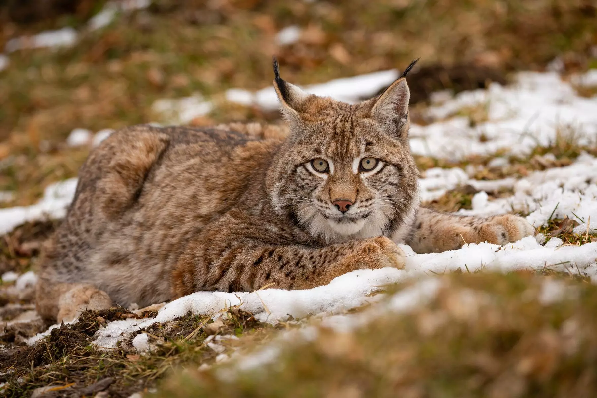
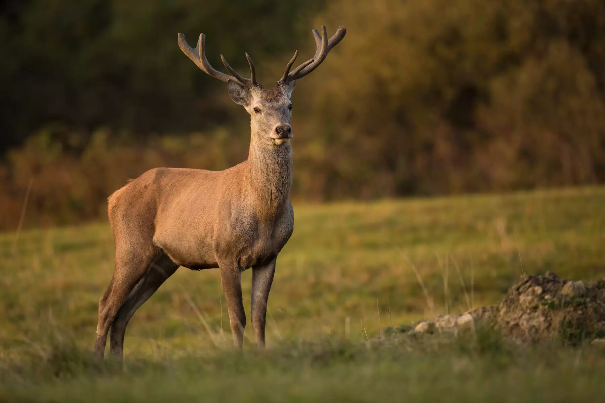
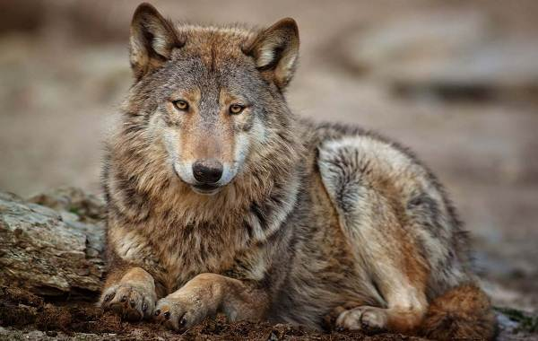

Є найбільшим хижаком України та Європи, вага якого може сягати 600 кг. Тварина харчується комахами, горіхами, медом, ягодами, грибами та корінням,
а ранньою весною спускаються до річки на риболовлю. Після танення снігів підіймається високо в гори. Бурий ведмідь
може прожити в одному барлозі все життя, міняючи його тільки в разі руйнування. Довжина кігтів у "милого ведмедика"
сягає до 12 см, тому зустрічі з ним краще уникати. Сьогодні популяція українських бурих ведмедів становить близько 300 особин, науковці
відстежують маршрути міграції ведмедів за допомогою спеціального обладнання.
Рись селиться у високогірній місцевості. Це бездоганний мисливець, здобиччю якого може стати вівця, заєць, козуля або навіть дика свиня. За розміром хижак нагадує великого собаку, проте багаторазово перевершує його у спритності та маневровності. Розкішне плямисте хутро рисі робить її однією з найкрасивіших представниць тваринного світу Карпат, а ефектні пензлики на вухах надають додаткового шарму. Саме рись стала переможницею всеукраїнського голосування в номінації «Символ Карпат».
Гірські олені відомі своєю любов'ю до тривалих переходів, за день можуть долати до 50 км. Тварини невибагливі в їжі та здатні харчуватися рослинністю понад 300 видів. Олені — стадні тварини, як правило, зграю очолює стара самка. Силу противника олені визначають за гучністю реву, який періодично розноситься околицями.
Це хижий ссавець, що належить до родини псових (Canidae). Вовки є важливими хижаками у багатьох екосистемах, регулюють популяції травоїдних і допомагають підтримувати баланс у природі.
